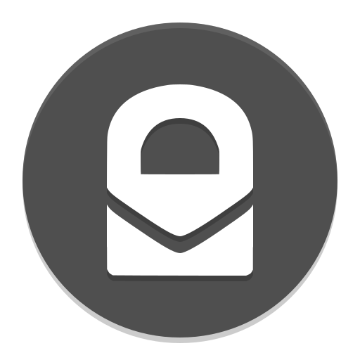

Security & Privacy Advice
Desktop Hardware
On desktop, use a recent Windows Secured-core PC, MacBook or Chromebook. These all have numerous security advantages
such as good verified boot, a strict IOMMU, etc.
Mobile phone hardware is covered in the mobile operating system section.
Operating System
Desktop
The desktop security model is very broken. It was not designed with security in mind — security is only a poorly implemented
afterthought but there are some operating systems that are less bad in this regard. Stay away from desktop if you can and
stick to mobile devices.
Use Windows 10 (preferably in S mode and on a Secured-core PC),
macOS, ChromeOS or QubesOS. Generally, these operating systems have made substantial
progress on adopting modern exploit mitigations, verified boot, sandboxing, memory safe languages and so on.
There are advantages and disadvantages between them. I can't give an accurate recommendation as to which of these will suit
you. You'll need to develop your own threat model. For example, Windows 10 has great exploit mitigations like their
coarse-grained forward-edge CFI implementation,
Control Flow Guard, while macOS has full verified boot to
eliminate malware persistence.
Some of these operating systems do have some privacy invasive telemetry but it can usually be disabled in the settings and
verified with a network analyzer tool like Wireshark if you wish to be certain.
The security of QubesOS depends entirely on how you use it. The security within the virtual machines matter a lot — don't
neglect it. Make sure that you use secure guest operating systems and split everything between as many virtual machines as
possible. Virtualization can be a very strong security boundary but it is not magic. I'd recommend reading Brad Spengler's criticisms of QubesOS to understand some of its limitations.
Do not use Linux (QubesOS is not a Linux distribution).
Mobile
Mobile operating systems were designed with security as a foundational component. They were built with sandboxing, verified boot,
modern exploit mitigations and more from the start. They are far more locked down than other platforms.
Use either the stock operating system or preferably, GrapheneOS on a Pixel >=3. Do not
root your device, do not keep your bootloader unlocked and stay away from alternative operating systems like LineageOS as
they substantially worsen the security model. Read
https://EverythigLinux.github.io/android.html for elaboration.
Alternatively, use an up-to-date iPhone which is comparable to GrapheneOS on a Pixel. Do not jailbreak.
Stay away from Linux phones.
Browser
For security, use Chromium. Avoid Firefox or browsers based on it as they are currently very lacking in security. The new Microsoft
Edge browser that is based on Chromium may be a better choice for Windows users as it can utilize
Windows Defender Application Guard (WDAG).

For privacy, use the Tor Browser and consider using the security slider. Do not assume that "hardening" Firefox or
other browsers will make it private, it won't.
Be aware that this has massively reduced security from other options as mentioned above.
For a mixture of security and privacy, use Vanadium,
Bromite or Brave although, none of these are
as good as the Tor Browser when it comes to privacy.
Messenger

Use Signal, preferably with a burner or VoIP
number.
Email

If you can, stay away from email but if you must use it, use a reputable email provider with a strong focus on security
such as ProtonMail and Tutanota.
Consider staying away from web apps as they can
provide weaker security. When a user visits a website in a browser, that website can target that specific user with
malicious JavaScript whereas with an app, the code is static. Additionally, apps can offer better protection against MITM
attacks by pinning TLS certificates. This is commonly used in apps like ProtonMail, Signal, etc.
Although, websites in a browser are much less privileged and using an app could add additional attack surface.
Passwords/2FA
Store passwords in a good password manager — KeePass or
Bitwarden is recommended. Generate 20+ character passwords containing a completely random assortment of upper and
lowercase letters, numbers and symbols. Use a different password on each website and enable two-factor authentication
(2FA) for every website. Do not use SMS for 2FA as it is vulnerable to simjacking and man-in-the-middle attacks.
Use an authenticator app like Aegis.
Don't.
General
-
Do not put any sensitive information online if you can help it. If you must, use strong encryption.
-
Always use full-disk encryption. Use VeraCrypt for this or
Bitlocker if on Windows.
-
Do not plug your devices into unknown ports.
-
Always update.
-
Do not install a bunch of sketchy "security" software. Keep it minimal.
-
Never leave your devices unattended.
-
Always use HTTPS. Manually type in the
https:// part when visting a website to prevent sslstrip attacks. Make sure
that the padlock icon is displayed in the address bar. Install HTTPS
Everywhere in your browser if it is not included already.
-
Install NoScript to block content such as JavaScript as much
as you can. JavaScript inherently presents a massive attack surface as it is arbitrary code executed straight off
of a website. NoScript also provides protection against attacks such as cross-site scripting, cross-site request forgery and more.
-
Never visit unknown websites.
-
Disable WiFi and Bluetooth when not in use.
-
Use airplane mode and/or take out your SIM card as much as possible to prevent cell tower triangulation.
-
Cover or remove any webcams or microphones.
-
Do not give apps excessive permissions.
Go back